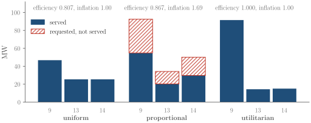
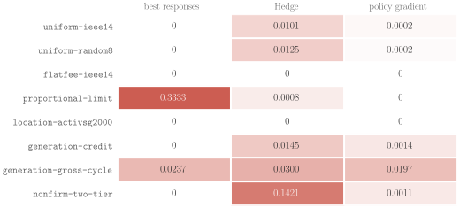

Overview
Requests from data centers and other large loads now arrive faster than grid operators can study them one at a time, so operators are moving to batch studies. Many requests are studied together, and the capacity the network can host is split among them. How it is split shapes what applicants ask for: an applicant that expects to be cut back may inflate its request, while one that pays for every requested megawatt has a reason not to.
interconnection-gym turns this into a multi-agent game on real network data. The equilibria of the allocation rules are known in closed form, so operators can compare rules before adopting them, and learning agents can be scored against ground truth.
For operators
Compare allocation rules and fees on your own network: who gets served, how much capacity goes unused, and how much applicants inflate their requests at equilibrium.
For researchers
PettingZoo and Gymnasium environments with continuous and discrete actions, proven equilibria, network-derived scenarios, and benchmark tasks scored by exploitability.
The Batch Game
Locations are fixed in the default game. Applicant \(i\) sits at a given bus and chooses only how many megawatts to request. Letting applicants also choose where to connect is a separate game, the location game (LocationGame); generators, batteries, and non-firm service add a second decision at the same fixed bus.
Applicant \(i\) requests \(r_i\) MW at its bus. The network enters only through its batch region: the served loads that every studied hour can host after the existing generators are redispatched. The region is exported exactly from a DC power-flow scenario,
$$\tilde{\mathcal H} = \{\, s \ge 0 : A s \le b \,\}, \qquad s = U(r) \in \tilde{\mathcal H}, \quad s \le r .$$The operator's rule \(U\) splits the region among the requests. The default uniform rule raises every served load together, and stops each one at its request or when a limit it loads binds (water-filling). A minimum allocation \(\beta\) drops applicants served less than \(\beta r_i\). Each applicant earns the value of what it is served, minus a commitment on what it requested,
$$u_i(r) = V\, s_i - \kappa\, r_i .$$The package also models the proportional and utilitarian rules, flat fees and security deposits, location choice, on-site generation and storage, and firm and non-firm service.
What the Theory Guarantees
Each result is exposed as an oracle in the package, and the test suite checks it against the engine.
| Setting | Equilibrium | In the package |
|---|---|---|
| Uniform rule, per-MW commitment (fixed buses) | the max-min fair point \(w\), unique and served in full, for any \(\beta\) | predicted_equilibrium |
| Best-response dynamics | reach \(w\) within \(2n\) rounds (no minimum allocation) | best_response_dynamics |
| Flat fee | every profile in \([w, w/\beta]\), all serving \(w\) | predicted_equilibrium |
| Proportional rule, one limit | requests inflated by \(\rho = \min\{\max\{(1-1/n)V/\kappa, 1\}, 1/\beta\}\) | proportional_inflation |
| Efficiency | price of anarchy at most \((1+nR)^2/(4nR)\), with \(R\) the spread of hosting capacities | poa_bound |
| Location choice (buses chosen) | a strong pure equilibrium; every improving move raises the sorted shares | LocationGame |
| On-site generation | three regimes under the gross rule (no build, all at the cap, none); unique under crediting | GenerationGame |
| Firm and non-firm service | an equilibrium on any network under the two-tier rule, served in full | NonFirmGame |
For Operators: Compare Rules
icgym-compare takes a DC power-flow scenario and the buses in a batch, and finds each rule's equilibrium. It reports served megawatts, efficiency against the planner's optimum, request inflation, capacity paid for but not served, and the binding limits. The output is a table, JSON, or an HTML report.
icgym-compare --data path/to/scenario --buses 9,13,14 \
--rules uniform,proportional,utilitarian --kappa 0.4 --beta 0.5 --html report.html
Three rules on one batch of the IEEE 14-bus system. The uniform rule serves less in total, but every request is honest. The proportional rule serves more, yet every applicant inflates its request by 1.69 and pays for capacity it does not get. The utilitarian rule reaches the planner's total here, by concentrating service on the site that loads the limits least.
For batches of any size on large networks, --implicit keeps the exact network region implicit and queries it with linear programs, at seconds per allocation on the 2,000-bus grid.
For Researchers: Environments and Benchmarks
| Environment | Interface | Actions |
|---|---|---|
BatchRequestParallelEnv | PettingZoo | a request at a fixed bus (continuous) |
SingleApplicantEnv | Gymnasium | one learner against fixed rival policies |
LocationParallelEnv | PettingZoo | a bus from a menu (discrete); requests at their equilibrium |
DeviceParallelEnv | PettingZoo | a request plus a generator, battery, or non-firm share, at a fixed bus |
VectorBatchRequestEnv | NumPy, many copies per call | batched requests, about 50 times faster |
from icgym import BatchGame, PerMWCommitment, UniformRule, ieee14
from icgym.envs import BatchRequestParallelEnv # PettingZoo ParallelEnv
from icgym.benchmarks import run
game = BatchGame(ieee14((9, 13, 14)), UniformRule(beta=0.5), PerMWCommitment(0.4))
env = BatchRequestParallelEnv(game, rounds=20, observation="public")
run("uniform-ieee14", "independent_pg", seed=0) # exploitability, distance to w, efficiency
Eight tasks with known answers and three baselines, mean over three seeds. Each cell is the exploitability of the final profile: the largest gain any agent has from deviating alone, relative to its value at its hosting capacity (0 at an equilibrium). Policy gradient, which sees only rewards, reaches the equilibrium wherever one exists. In the generation game with no pure equilibrium, every baseline stays exploitable. Under the proportional rule with a minimum allocation, best responses stall: the best payoff is a vanishing undercut of a rival, and it is never attained.
Data
- ACTIVSg2000, the synthetic 2,000-bus Texas grid, over five representative days. The package ships exact batch regions of 150 bus pairs, 35 batches of two or three buses, and 8 location multisets, plus reference results for batches of five buses and for a location game over six buses. The data is adapted from a CC BY 3.0 work; please cite Birchfield et al., IEEE Trans. Power Systems, 2017.
- IEEE 14-bus, built on your machine on first use, from the public case file and the package's own limits and load profile. Any set of buses is exported in seconds. The case file itself is not redistributed.
- Your network:
icgym-exportbuilds the exact batch region of any buses from a DC power-flow scenario.
Get Started
pip install "interconnection-gym[envs] @ git+https://github.com/MhaoMou/interconnection-gym"from icgym import BatchGame, PerMWCommitment, Region, UniformRule
region = Region(A=[[1.0, 1.0, 0.0], [0.0, 1.0, 1.0]], b=[2.0, 3.0]) # two shared limits
game = BatchGame(region, UniformRule(beta=0.5), PerMWCommitment(kappa=0.4), value=1.0)
w = game.predicted_equilibrium()["requests"] # the unique equilibrium: [1, 1, 2]
game.exploitability([1.5, 1.0, 2.0]) # applicant 0 gains 0.2 by returning to wBibTeX
@software{interconnection_gym,
title = {interconnection-gym: Batch Interconnection of Large Loads as a Multi-Agent Game},
author = {Mou, Minghao},
year = {2026},
version = {1.0.0rc1},
url = {https://github.com/MhaoMou/interconnection-gym}
}